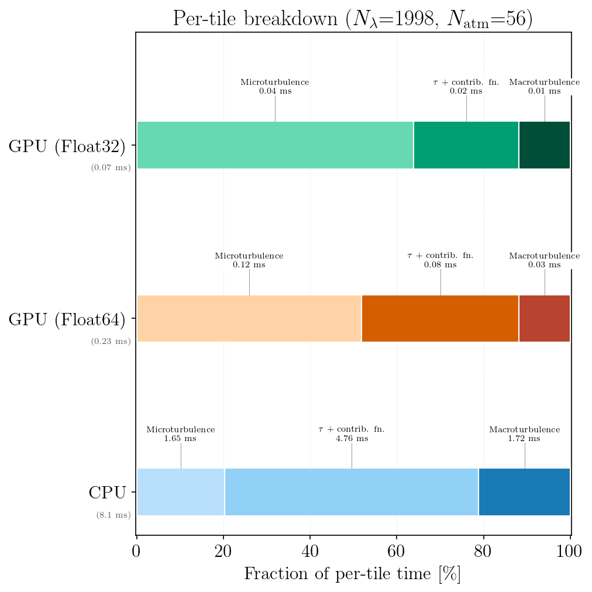
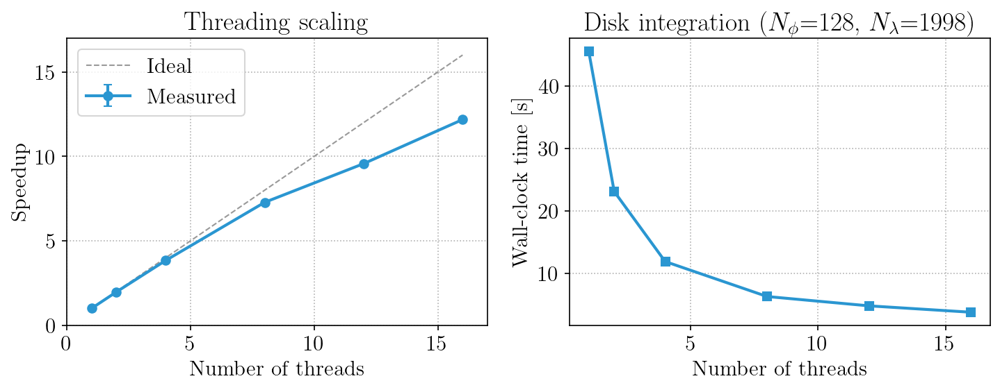
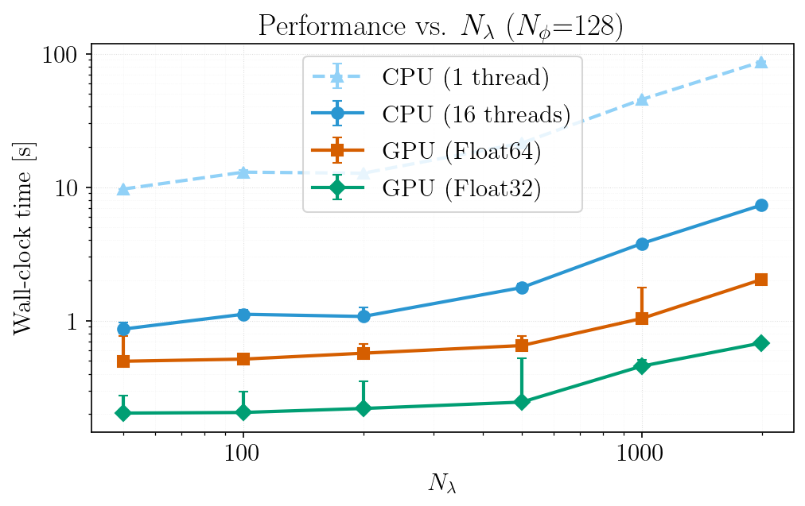
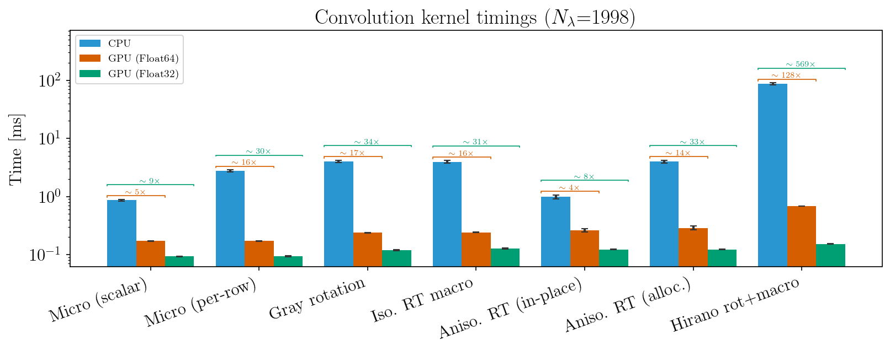
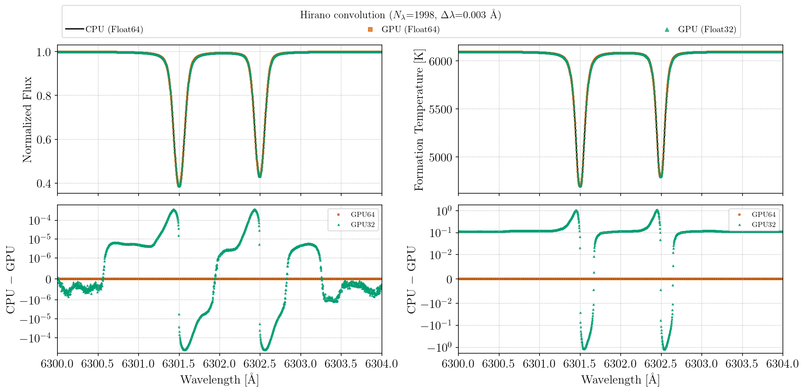
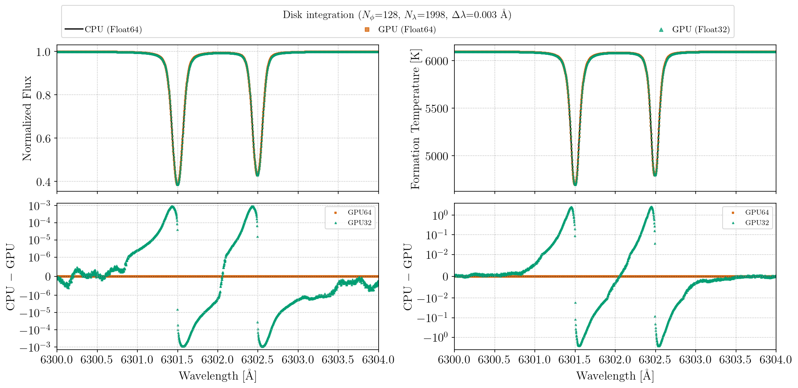

Parallelization
FormationTemps.jl parallelizes the disk integration pipeline in two complementary ways: CPU multithreading across stellar surface tiles, and GPU acceleration via CUDA.jl. Both target the same bottleneck — the per-tile radiative transfer loop that dominates wall-clock time with method=:disk. (The :quadrature method sidesteps most of this cost.)
CPU Multithreading
When use_gpu=false and method=:disk, calc_formation_temp distributes tiles across Julia threads. Start Julia with multiple threads to benefit:
julia -t auto # use all available cores
julia -t 8 # use 8 threadsThe environment variable JULIA_NUM_THREADS can also be set before launching Julia.
CPU multithreading is not compatible with calling FormationTemps.jl from Python via juliacall/PythonCall. Julia's multi-threaded garbage collector can conflict with PythonCall's runtime bridge, causing hard crashes (SIGBUS/segfault). When calling from Python, JULIA_NUM_THREADS must be set to 1. See the Python Tutorial for details.
If you need both parallelism and Python, use the GPU path (use_gpu=True) or run the computation in Julia and load the results in Python.
GPU Acceleration
GPU acceleration is enabled by default when a compatible NVIDIA device is detected (CUDA.functional() == true); pass use_gpu=false to force the CPU path.
Setup
GPU support requires an NVIDIA GPU and a working CUDA toolkit. CUDA.jl handles driver detection and toolkit installation automatically in most cases:
using CUDA
CUDA.functional() # should return true
CUDA.versioninfo() # check device and toolkit detailsIf CUDA.functional() returns false, consult the CUDA.jl troubleshooting guide. FormationTemps.jl will fall back to the CPU path transparently.
GPU precision
Pass gpu_precision=Float32 to calc_formation_temp to run GPU computations at single precision:
result = calc_formation_temp(star, linelist; gpu_precision=Float32)Absorption coefficients are always computed at Float64 (a Korg requirement) and converted to the target precision before GPU upload. Float32 roughly halves GPU memory usage and can improve throughput on consumer GPUs with higher FP32 than FP64 performance. The default is Float64.
What gets accelerated
The disk integration pipeline repeats the full radiative transfer calculation for every visible tile on the stellar surface — typically thousands of tiles for Nϕ = 128. Each tile requires:
- Microturbulent broadening: FFT-based Gaussian convolution of the absorption coefficient matrix along the wavelength axis. The absorption signal FFT is tile-independent and computed once; only the per-tile Doppler kernel varies.
- Optical depth integration: builds
τ(λ)at each atmosphere layer. - Contribution function: intensity contribution per layer.
- Macroturbulent broadening: radial-tangential convolution of the contribution function, weighted by the tile's solid angle.
On the GPU, tiles are processed in batches of B (up to 64). Steps 1–3 use batched CUDA kernels operating on all B tiles simultaneously via 2D cuFFT plans. Step 4 uses Fourier-domain accumulation: each batch's contribution functions are forward-FFT'd together, multiplied by per-tile macro kernel FFTs (precomputed for each unique μ), and accumulated in a single complex-valued accumulator. One inverse FFT at the end of the tile loop recovers the real-space result. This avoids ~10⁴ per-tile inverse FFTs.
All tile parameters (μ, dA, velocity) are uploaded to the GPU once before the tile loop — there are no host-device transfers during the loop. GPU memory is pre-allocated at the start of the call and reused throughout. The macro kernel FFTs for all unique μ values are precomputed in a single batched operation.
Benchmarks
The results below were obtained on an Intel Xeon w5-3435X (16 cores / 32 threads) with an NVIDIA RTX 6000 Ada (48 GB). All benchmarks use a two-line Fe I test spectrum near 6300 Å with Δλ = 0.005 Å, solar stellar parameters (vsini = 2100 m/s, ζ_RT = 3500 m/s, ξ = 850 m/s), and Nϕ = 128. To reproduce, run julia --project=. benchmarks/run_all.jl — see the benchmarks/ directory for individual scripts.
Per-tile breakdown
Amortized per-tile timing for CPU (single tile, both total + continuum paths) and GPU (per tile from a batch of B = 8). GPU times include dual-stream overlap of total and continuum paths. The GPU macro convolution uses batched Fourier-domain accumulation — the reported per-tile cost is the batch wall time divided by B, not a per-tile serial operation.

CPU thread scaling
Speedup and wall-clock time as a function of the number of Julia threads for a full calc_formation_temp call with disk integration.

Performance vs. wavelength grid size
End-to-end wall-clock time as a function of Nλ (varied by changing Δλ over a fixed wavelength window) for single-threaded CPU, multi-threaded CPU, and GPU. Note that the FFT-padded length (not Nλ itself) determines FFT cost — non-monotonic performance at certain Nλ values reflects jumps to less efficient FFT-friendly lengths (e.g., Nλ + 512 landing on a pure power-of-5 vs. a power-of-2 composite).

Convolution kernels
Individual broadening kernel timings for each convolution type (CPU vs GPU Float64 vs GPU Float32). The "Micro (scalar)" and "Aniso. RT (in-place)" entries reflect the production disk integration path; the "Micro (per-row)" and "Aniso. RT (alloc.)" entries show the alternative dispatch variants for comparison.

Performance tips
- GPU memory: the first call to
calc_formation_tempwithuse_gpu=trueallocates GPU buffers and cuFFT plans. Subsequent calls with different parameters re-allocate. If GPU memory is tight, usegpu_precision=Float32to roughly halve usage. - CPU threads: CPU disk integration scales well to ~16 threads. Beyond that, FFTW plan contention and memory bandwidth limit gains. FFTW internal threading is disabled during the tile loop — parallelism comes from distributing tiles across Julia threads.
- Absorption cost: the
compute_alpha!call (Korg chemical equilibrium + line absorption) runs on CPU for both paths and scales with the number of spectral lines ×Nλ. For large linelists, this can dominate total time regardless of GPU acceleration.
CPU vs. GPU numerical differences
The CPU and GPU paths use the same algorithms throughout: real-space kernels placed in DFT layout and R2C FFT'd, padded linear convolution with edge replication, and identical optical-depth integration schemes. At Float64, CPU and GPU agree to floating-point precision.
Float32 vs. Float64 accuracy
The figures below compare flux and formation temperature spectra for two Fe I lines near 6300 Å, computed at CPU Float64, GPU Float64, and GPU Float32 for a solar-like star. The top row overlays the three spectra (visually indistinguishable); the bottom row shows residuals relative to the CPU Float64 reference on a symmetric log scale. GPU Float64 residuals are negligible. GPU Float32 residuals are larger but still modest: flux residuals at the ~10⁻⁴ level and formation temperature differences of ~1 K.


These plots can be regenerated with julia --project=. benchmarks/gpu_precision_comparison.jl.